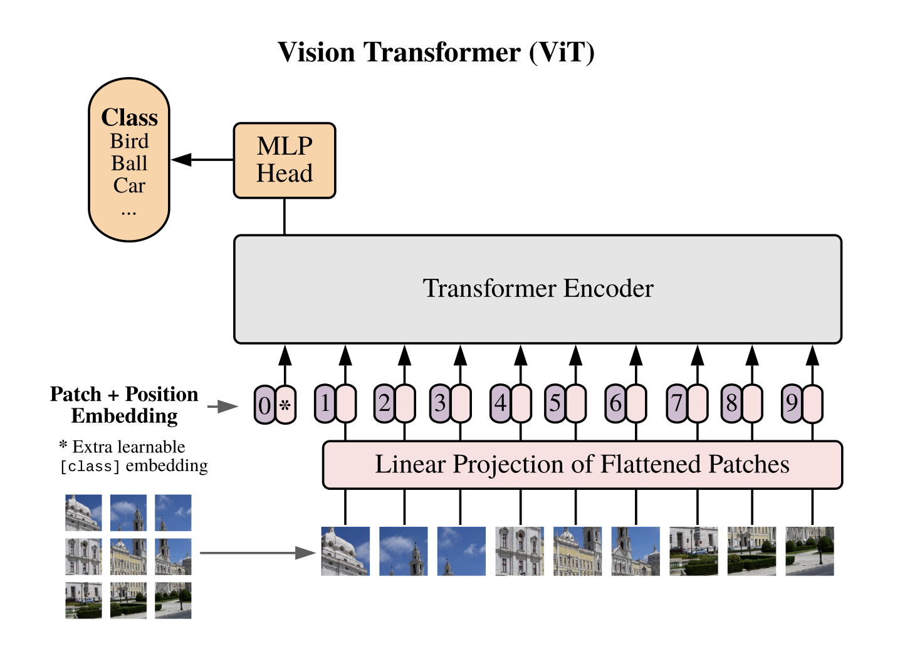

Transformers were originally introduced to take on challenges faced in tasks like language modelling and machine translation.
Before the introduction of Transformers the then SOTA methods, such as long short-term memory (LSTM), and recurrent neural network
(RNN) were sequential in nature which posed challenges in handling long sequences due to memory constraints of the hardware.
The Transformers were introduced as an approach that only uses self-attention, the absence of recurrence allowed for significant
improvements in parallelisation. For example trained on massive datasets of text, allowing it to maintain context across very long sequences.
For instance, when training GPT models, sequence lengths can span thousands of tokens. Due to the architecture’s self-attention mechanism,
the model can efficiently analyse relationships between words at the start and the end of long paragraphs or even entire documents, without
losing context or accuracy in predictions.

A diagram of vanilla ViT (taken from 'An Image Is Worth 16X16 Words').
Transformers in computer vision tasks
The success of transformers in natural language tasks inspired researchers at Google Brain research team to explore their potential in image classification tasks.
At that time, convolutional neural networks (CNN) were the dominant architecture for tackling computer vision tasks. However, it was getting increasingly difficult
to scale CNNs to train on larger datasets with high-resolution images. The training parallelisation offered by transformers offered a solution to all the impending problems,
allowing to train on over 100B parameters. Since transformers were designed for natural language tasks some innovation was required to prepare images such that they could be
ingested during the training phase. The solution was to split an image into patches and provide the sequence of linear embeddings of these patches as an input to a Transformer.
Image patches are treated the same way as tokens (words) in an NLP application. Then the model was trained on image classification in a supervised fashion.
How good are ViTs as compared to CNN
If transformers are so good at NLP tasks are CNN obsolete? The answer depends on the context, in many cases, ViTs have competitive performance to CNN but require more training
data and compute. The vanilla ViT does not offset the cost of added hardware & data requirements with their performance. In the paper “Emerging Properties in Self-Supervised Vision
Transformers” the authors argue that because of supervision during the training process, ViT is often forced to map the rich visual information contained in the image to a single
concept i.e. label.
However, the adoption of self-supervised learning showed the extraordinary potential of ViTs to extract rich visual features from images that can be then used for downstream tasks
such as classification and segmentation.